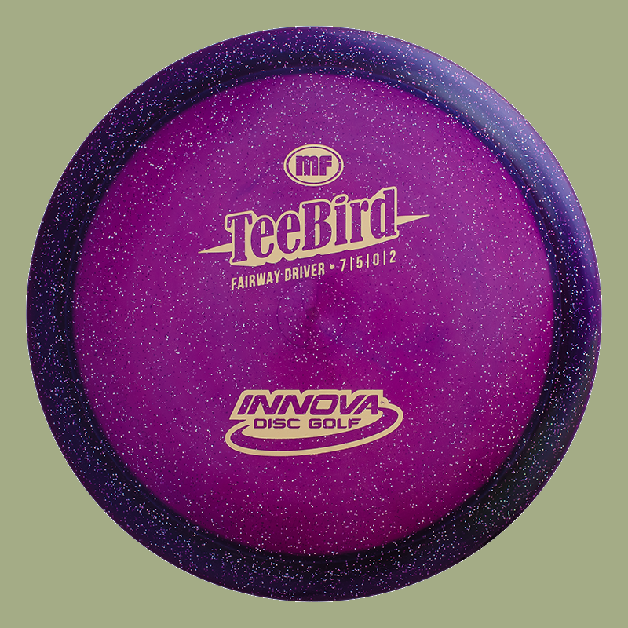
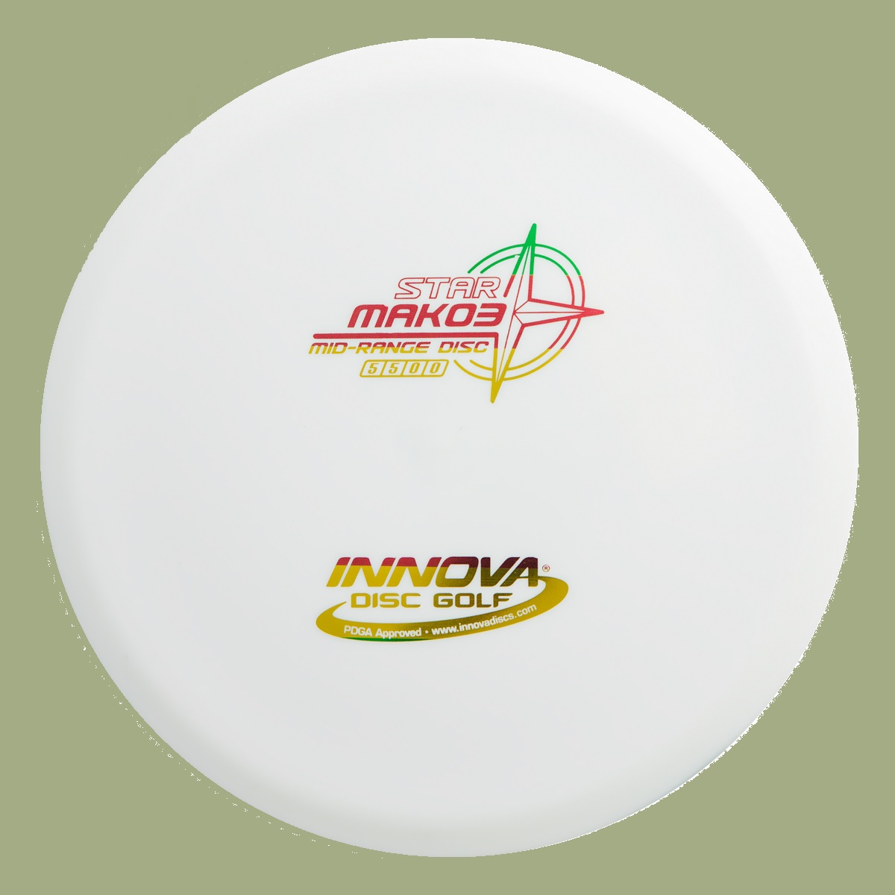
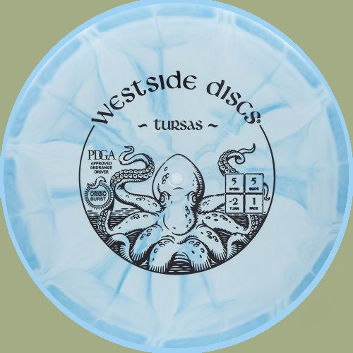
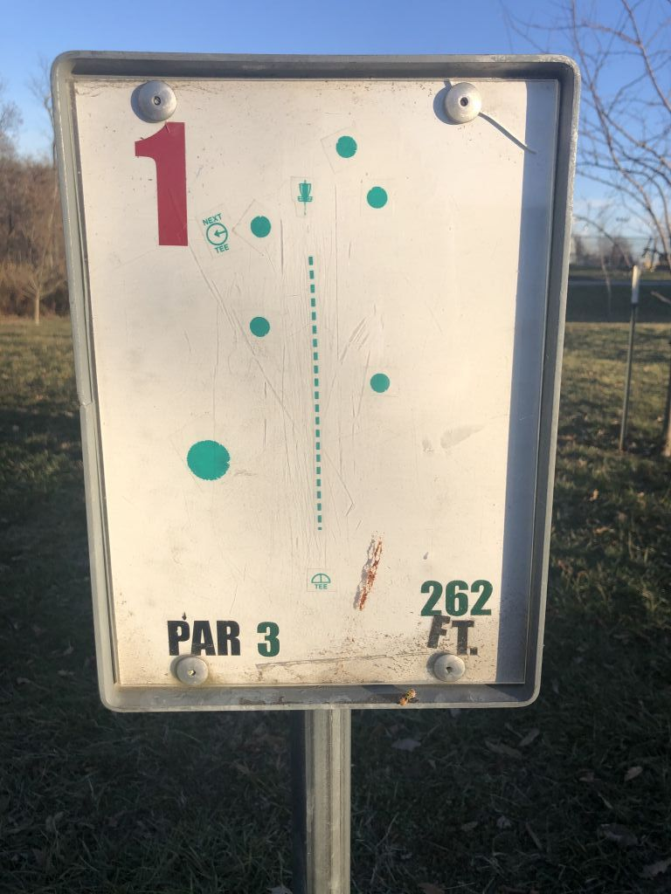
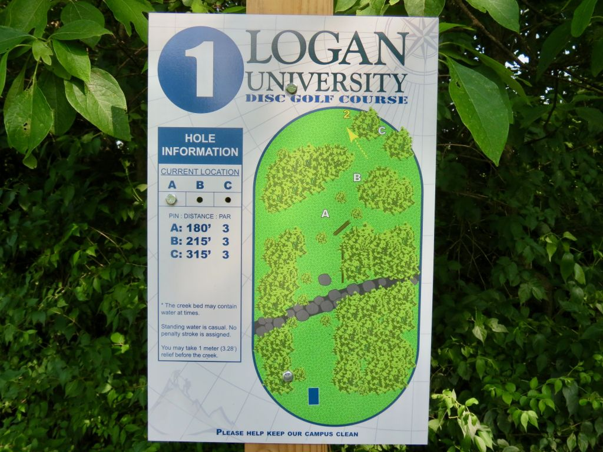
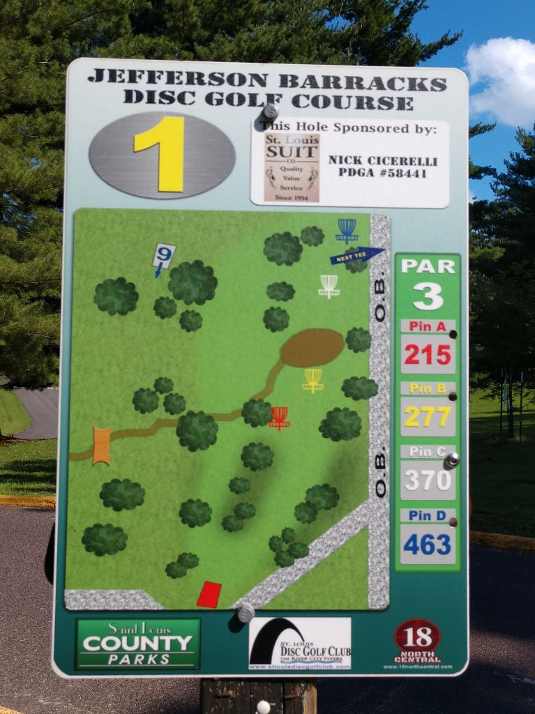

Drivers:
-

This disc is a beauty! Excellent for pin-point accuracy or distance, most accurate and reliable driver.
Star Mako3
The Mako3 is probably the straightest flying midrange disc in the game and it's a perfect midrange option for all skill levels. Mako3 has a smooth straight flight path with minimal fade in the end, when thrown with low to moderate amount of power. When thrown with high power, the Mako3 will gradually turn, making it optimal disc for long turning anhyzer shots even on a narrow line.
Mid-Range:
Westside Discs Tursas
The Tursas is Westside's most controllable midrange disc. Designed with the everyday player in mind, the Tursas will make playing disc golf more fun. It should allow you to make a midrange anhyzer while you are learning to play.
Schroeder Park
Schroeder Park has very recently been updated to be a full 18 hole course. The new 9 holes use the woods around the original 9, and keep the short feel of the original design. This 18 hole design has been an idea that's been around for a while, and I will be sure to update this review once I get to play this course again. Check UDisc for the new layout.
Logan University
Logan University is home to a disc golf course that provides a good amount of variety, including some challenges you won't see at many other courses in the area. This course will definitely test your endurance, and a low score will leave you feeling accomplished.
Jefferson Barracks Park
Jefferson Barracks, affectionately known as JB by the local disc golf scene, is an 18 hole park course located about 15-20 minutes south of downtown St. Louis. Jefferson Barracks park is next to a large national cemetery and Army/National Guard of the same name. As a whole, the area has a lot of historical military significance. As for the disc golf course, it is easily one of if not the most popular course in St. Louis.